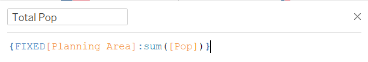
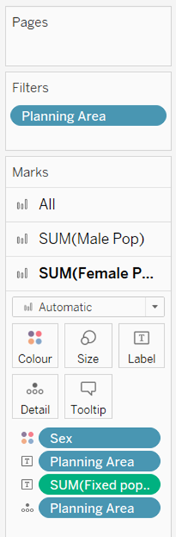
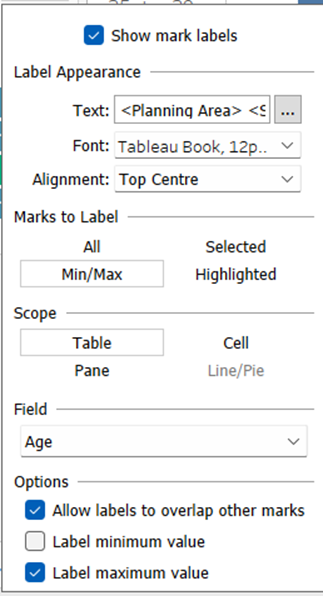
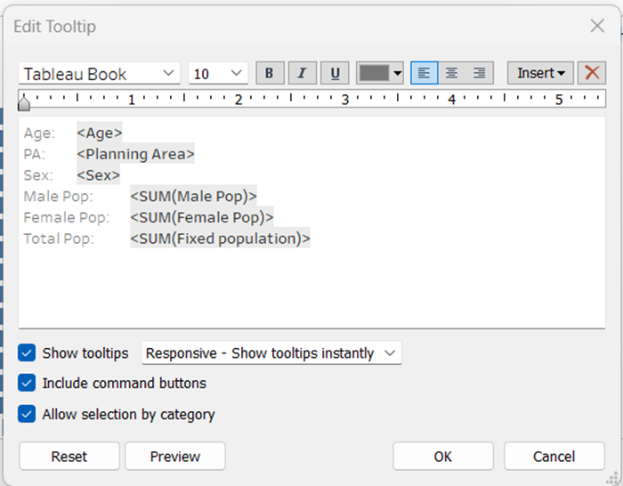
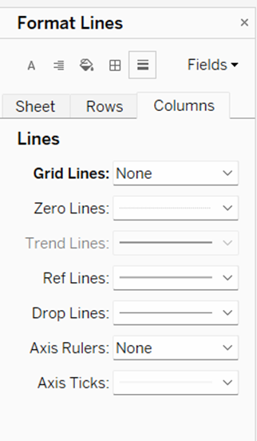
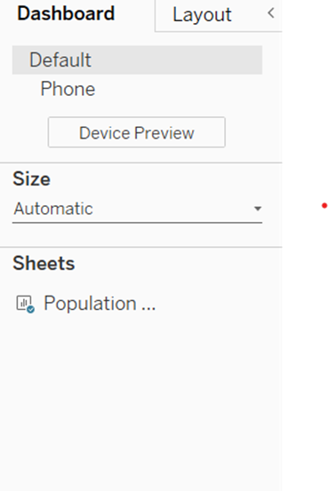
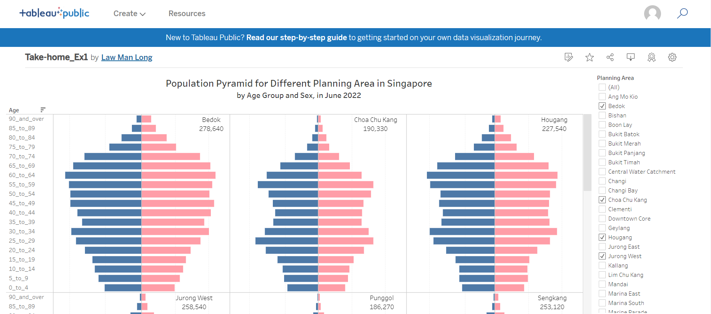
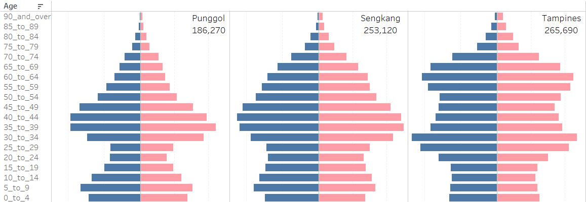
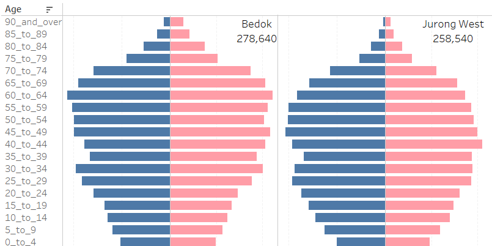

Take Home Exercise
1. Dashboard Description
This purpose of the dashboard is to show the demographic structure of Singapore at planning area level by gender and age group using age-sex pyramid method. Nine selected planning areas is displayed on a single view by using trellis display.
2. The Data
Singapore Residents by Planning Area / Subzone, Age Group, Sex and Type of Dwelling, June 2022 should be used to prepare the analytical visualisation. Data can be accessed here.
3. Dashboard
Below is the tableau dashboard. You can access here if the dashboard is not properly displayed.

4. Step-by-Step Procedures
The section details the steps required to produce the geographic distribution dashboard in section 3.
4.1 Import data
| No. | Step | Screenshot |
|---|---|---|
| 1. | Load the respopagesextod2022.csv data file into Tableau Desktop | | |
| 2. | Preview data under the [Data Source] tab. The data set contains 7 fields and 100927 rows. Rename field name [PA] to [Planning Area] and [AG] to [Age] for easy reference. |
4.2 Create the Age-Sex Pyramid
| No. | Step | Screenshot |
|---|---|---|
| 1. | Create a new Sheet 1. Drag [Age] to Rows. You will see a table with all the Ages in rows. | | |
| 2. | Right click on Data panel on left and create a calculated field with formula as the screenshot on left. Name the field as [Male Pop]. This create a new column which | |
| 3. | Create another calculated field [Female Pop] with the formula on the right. | |
| 4. | Drag the calculated field to columns. This will create two bar chart side by side. Drag [Sex] to Colour and edit the color for Female and Male. |
|
| 5. | Right click on [Male Pop] Axis, select edit axis and check the box for Reversed. |
4.3 Create trellis chart
| No. | Step | Screenshot |
|---|---|---|
| 1. | Add one calculated field called [Columns] and another two calculated field called [Rows]. Formulas listed on the screenshot. | |
| 2. | Drag [Planning Area] to filter | |
| 3. | Select top 9 planning area with most population on the right filter | |
| 4. | Drag [Columns] to the Columns and [Rows] to Rows on top. A 3 x 3 table is created. Select [Column] and choose Compute Using [Planning Area]. Repeat the same for [Rows] |
 |
4.4 Format Charts
| No. | Step | Screenshot |
|---|---|---|
| 1. | Create a calculated field called “Total Pop” using FIXED[Planning Area]. This is to calculate the total population for each planning area |  |
| 2. | Under SUM(Female Pop) on the left panel, drag [Planning Area] and [Total Pop] to Label. |  |
| 3. | Under label, check the box for show mark labels. Check the box for (Allow labels to overlap other marks) and (Label maximum label). The label for each planning area and total population will appear on the top of each chart. |  |
| 4. | Click on Tooltip and edit the information as screenshot |  |
| 5. | Right click the graph and choose format. Format the grid lines for column. |  |
| 6. | Double click on title and edit title. Also rename the worksheet name at the bottom to “Population pyramid by planning area” |
4.5 Create and Publish Dashboard
| No. | Step | Screenshot |
|---|---|---|
| 1. | Click on new Dashboard. Drag the “Population pyramid by planning area” worksheet to “Sheets” section on the left. | |
| 2. | On the left bar, choose Automatic under Size. This is to allow the dashboard frame fits to different browser size. |  |
| 3. | Go to Data on the top navigation bar and choose Extract data. Press Extract in the dialog box. | | |
| 4. | Go to Sever at the top navigator bar and choose Tableau Public and Save to Tableau Public | |
| 5. | The tableau dashboard is published under my tableau public account and a website is generated for share. |  |
5. Data Patterns
We can generate different insights on Singapore population structure with the visualisation. Here are few observation.
Overall pattern
All of the 9 Planning Area shared similar shape pattern which is similar to a “constrictive pyramid”. The graph is narrow at the base which signals a declining birth rate and low fertility rate. Most of the graphs are wide at the middle which signals a high life expectancy and low mortality rate. The overall population could be reducing as a result.
All the planning areas has a symmetric pattern, which signals that there are no age structure difference for male and female.
Difference among planning areas
Top 9 planning areas with the most population are selected for the dashboard. Most planning areas display a similar age pattern with a narrow top and narrow base. However, there are still some slight different pattern among some planning areas.
1. Punggol, Sengkang and Tampines
In these 3 planning areas, most people are at their 35-45, which is younger that the other planning areas. At the same there are also a high number of children and new birth, which might indicates people that there are higher birth rate in those planning areas. However, there is a sharp decrease in age group of 20-29 years old, which results in a pattern like Christmas tree.

2. Bedok and Jurong West
Another 3 areas that demonstrates similar pattern are Bedok and Jurong West. These two districts both have higher population elder age group of 50-69 & 40-64, which might signal people are likely to stay in the same planning area until they age.

Mean, Median, Mode
Although we are not able to see the mean and median in the population pyramid chart, we can observe the median of the 9 planning areas. Here are the mode for the 9 planning area:
| Planning Area | Mode (Age group) |
|---|---|
| Bedok | 60-64 |
| Chua Chu Kang | 45-49 (Male), 40-44 (Female) |
| Hougang | 60-64 |
| Jurong West | 45-49 (Male), 40-44 (Female) |
| Punggol | 35-39 |
| Sengkang | 40-44 (Male), 35-39 (Female) |
| Tampines | 30-34 |
| Woodlands | 25-29 (Female), 50-54 (Female) |
| Yishun | 30-34 |
Although we can see spot some pattern for planning area for younger population, most planning area are quite close in terms of mode. There are no clear insights base on the mode information.
Lesson Learnt
Population pyramid gives us a good understand on an area birth rate, mortality rate, and dependency ratio. However, It might be more meaningful if we can compare the population distribution with other information such as education level, employment rate and income level for future studies. It would be interesting to also draw comparison with other countries’ data to see if there are any similar pattern or distinct pattern of Singapore residence.